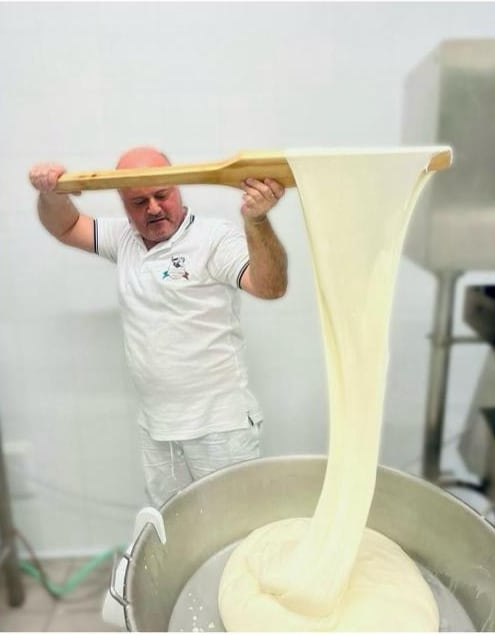
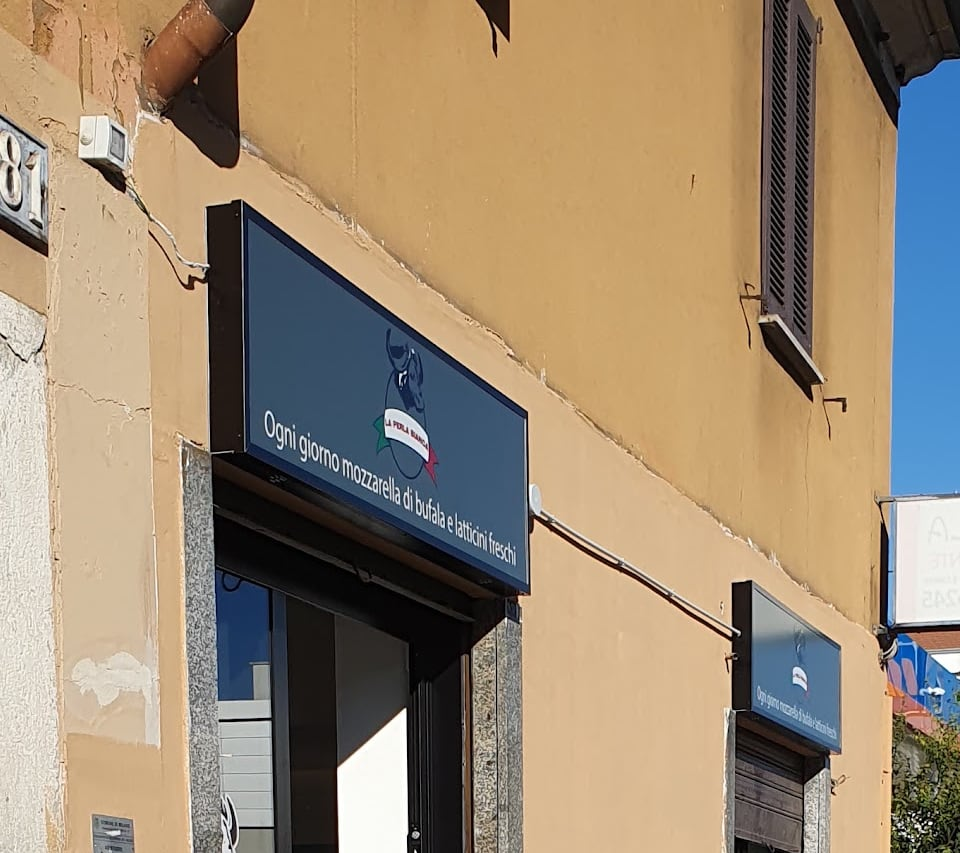

Caseificio · Viale Monza 281, Precotto, Milano
Fatta stanotte.
Il latte di bufala arriva dal Lodigiano alle due di notte. Si fila prima dell'alba, nel laboratorio dietro il banco, e alle 9:30 la mozzarella è pronta: con la ricotta, le trecce, la burrata. Si chiama Perla Bianca perché la mozzarella di bufala luccica come una perla: lo dice Antonio, che la fa da trentacinque anni.
«Ogni giorno mozzarella di bufala e latticini freschi» — è scritto sull'insegna
Orari in negozio

i latticini di bufala
Il filo di perle.
Tutto quello che esce dal laboratorio di notte, una perla alla volta. Si compra a peso, si mangia in giornata.
- Mozzarella di bufalada 500 grammi e da 250: il taglio grande, dicono i clienti, fa la differenza
- Bocconcini e nodinile perle piccole, quelle nell'acqua
- Trecce e treccioneintrecciate a mano, sulla carta col logo
- Burrataanche al gorgonzola e al pistacchio
- Stracciatellain vaschetta, a peso
- Ricottafresca, di fuscella, e al forno
- Provola e scamorza affumicatadi bufala e vaccina
- Primo salenei vari gusti
- Blu, taleggio e gorgonzola di bufalagli stagionati che i clienti chiamano «la chicca»
«Le perle bianche», dal loro Instagram La treccia, sulla carta col logo La ricotta di fuscella Le ricotte e la busta col logo
come si fa
Alle due di notte.
È l'ora in cui arriva il latte. Da lì alle 9:30 succede tutto, nel laboratorio che si vede dal negozio.
- Arriva il latte
Latte di bufala del Lodigiano, da un allevamento di millecinquecento capi: arriva ogni notte, tutte le notti.
- Si fila
Cagliata, filatura, forme: mozzarelle, bocconcini, trecce, burrate, ricotte. A mano, nel laboratorio dietro il banco.
- Sul banco
Si apre. Quello che vedete nell'acqua è stato fatto poche ore prima.
- Si fa solo quanto serveNiente avanzi per il giorno dopo: quando una cosa finisce, finisce. Meglio passare la mattina.
- Per più di un chilo, si prenotaUna telefonata il giorno prima, e la mozzarella per la festa o per il locale è pronta.
Il banco, la mattina L'insegna, in viale Monza
il resto del banco
Non solo mozzarella.
Intorno alle perle, il banco di un alimentare del Sud: formaggi, salumi, pane, taralli, e i prodotti campani che i clienti riconoscono al primo sguardo.
- Formaggistagionati vaccini e di bufala, al taglio
- Salumiaffettati al momento, la pancetta di campagna
- Pane e taralliil pane a peso, i taralli pugliesi
- Dispensa campanapasta, conserve, vini
Il panino di mezzogiornoFarcito al momento con quello che c'è sul banco, mozzarella compresa. E il rotolo di mozzarella con crudo e rucola, da portare via.
Il rotolo con crudo e rucola Gli scaffali: pasta e taralli La lavagna fuori: «formaggi di produzione propria», «panini imbottiti con i nostri prodotti»
chi c'è
Zi Peppe e Don Antonio.
Così si presentano loro. Antonio fa la mozzarella, di notte, da quando nel 1989 ha cominciato in un'azienda «prima pulendo i secchi», parole sue. Giuseppe sta al banco: è lui che i clienti nominano, undici volte, nelle recensioni.
- Antonio
Il casaro. Trentacinque anni di latte, l'ultima parte in questo laboratorio.
- Giuseppe
Al banco: spiega i formaggi, consiglia il taglio, fa il panino. «Da Peppe è come sentirsi a casa», scrive un cliente.
La bufala sulla porta
le voci
Cosa scrivono.
Nelle 62 recensioni Google con un testo, 42 parlano della mozzarella, 24 della freschezza, 19 della gentilezza, 17 della ricotta. E chi è cresciuto con la mozzarella di bufala, campani e napoletani, lo scrive: la promuove. Il titolare risponde, anche alle critiche, spiegando come si fa e come si conserva.
4,676 recensioni su Google
«Una perla dai sapori di una volta»
Da una recensione Google
dove e quando
Viale Monza 281, Precotto.
A un isolato dalla fermata Precotto della linea rossa, con l'insegna grigia e la bufala sulla porta. Aperto dalle 9:30 alle 19, orario continuato, dal lunedì al sabato.
- La mattina c'è tutto; a fine giornata qualcosa può essere finito.
- Per più di un chilo, una telefonata il giorno prima.
- Consegna a casa anche con Deliveroo, nella zona.
| lunedì | 09:30–19:00 |
| martedì | 09:30–19:00 |
| mercoledì | 09:30–19:00 |
| giovedì | 09:30–19:00 |
| venerdì | 09:30–19:00 |
| sabato | 09:30–19:00 |
| domenica | chiuso |
La mappa è di Google: aprendola, Google riceve il tuo indirizzo IP e può usare i suoi cookie.

Le domande che ci fanno.
La mozzarella la fate voi?
Sì: il latte di bufala arriva dal Lodigiano alle due di notte e viene lavorato prima dell'alba nel laboratorio dietro il banco, che si vede dal negozio. Alle 9:30 la mozzarella è pronta.
È mozzarella campana?
No: è mozzarella di latte di bufala del Lodigiano, fatta a Milano ogni notte. Tra chi la compra ci sono molti campani e napoletani, e lo scrivono nelle recensioni.
Posso prenotare?
Sì, con una telefonata allo 02 6885 3988: per quantità sopra il chilo è meglio prenotare il giorno prima, perché si produce solo quanto serve e quando finisce, finisce.
Come si conserva la mozzarella?
Nel suo liquido, e se non si mangia subito in frigorifero, tirandola fuori un po' prima di mangiarla. È un prodotto fresco e delicato: meglio comprarla il giorno stesso.
Fate panini?
Sì: panini farciti al momento con i prodotti del banco, mozzarella compresa, per il pranzo. E il rotolo di mozzarella con crudo e rucola.
Quali sono gli orari?
Dal lunedì al sabato dalle 9:30 alle 19, orario continuato. Domenica chiuso. La mattina c'è tutto; a fine giornata qualcosa può essere finito.